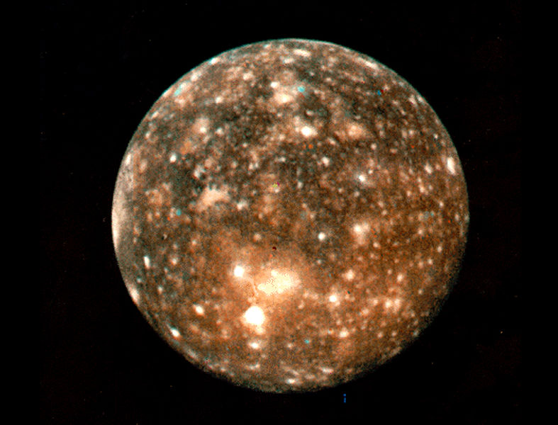
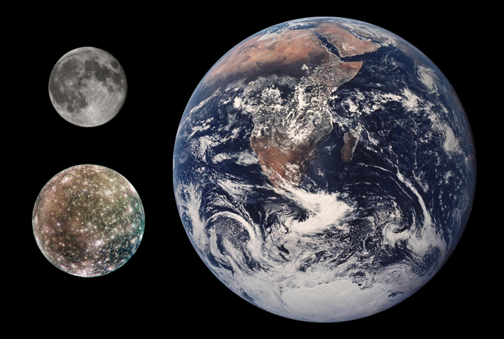
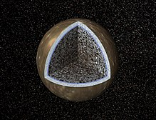

Callisto (J IV Callisto) est un satellite naturel de la planète Jupiter, découvert en 1610 par Galilée. Callisto est la troisième plus grande lune dans le Système solaire, la deuxième du système jovien, après Ganymède. C'est également la lune galiléenne la plus éloignée de Jupiter et la seule à ne pas être en résonance orbitale. Callisto se serait formée par accrétion du disque de gaz qui entourait Jupiter après sa formation. Callisto est composée approximativement à parts égales de roche et de glaces. En raison de l'absence d'échauffement dû aux forces de marées, la lune ne serait que partiellement différenciée. Des recherches menées à l'aide de la sonde Galileo ont révélé que Callisto pourrait posséder un petit noyau composé de silicates, ainsi qu'un océan d'eau liquide à plus de 100 kilomètres sous la surface de la lune qui serait susceptible d'accueillir la vie extraterrestre |
 |
La surface de Callisto est très cratérisée, extrêmement vieille et ne présente pas de trace d'activité tectonique. La surface de Callisto est moins affectée par la magnétosphère de Jupiter que celle des autres satellites internes car elle est plus éloignée de la planète. Callisto est entourée par une atmosphère très ténue composée notamment de dioxyde de carbone et probablement d'oxygène moléculaire, ainsi que par une ionosphère intense. Plusieurs sondes spatiales, de Pioneer 10–11 à Galileo et Cassini ont étudié la lune. Callisto a pendant longtemps été considérée comme le corps le plus adapté à l'installation d'une base humaine pour l'exploration du système jovien.
Callisto est découverte par Galilée en janvier 1610, à la même époque que les trois autres grandes lunes de Jupiter, Ganymède, Io et Europe. Cependant, il est possible que Gan De, un astronome chinois, l'ait observée en 362 av. J.-C. Callisto doit son nom à Callisto, une des nombreuses conquêtes de Zeus dans la mythologie grecque. Ce nom a été proposé par Simon Marius peu après la découverte. Selon Marius, le nom aurait en fait été suggéré par Johannes Kepler. Cependant, la désignation en chiffres romains introduite par Galilée est utilisée jusqu'au milieu du XXe siècle aux dépens des noms des lunes galiléennes issus de la mythologie. Selon cette désignation, Callisto est ainsi appelée Jupiter IV car c'est le quatrième satellite de Jupiter. Les formations géologiques remarquables de Callisto ont été baptisées d'après la mythologie scandinave. Ainsi, les deux plus grands cratères du satellites sont Valhalla et Asgard, nommés respectivement d'après le paradis des guerriers tombés au combat et le lieu de résidence des dieux. Les autres cratères sont baptisés des noms de héros : Valfodr, Hœnir, Lodurr, Bran, Sudri, Fodri, Nidi, Burr, Reginn, Ymir, Gymir, etc.
Callisto est la lune galiléenne la plus éloignée de Jupiter. Elle tourne autour de la planète à une distance de 1 880 000 km (26,3 fois le rayon de Jupiter). Le rayon de son orbite est beaucoup plus grand que celui de la seconde lune la plus externe, Ganymède dont le rayon de l'orbite est 1 070 000 km. Callisto étant beaucoup plus éloignée que les trois autres lunes, elle n'est pas en résonance orbitale avec elles et ne l'a probablement jamais été.
Comme bon nombre de lunes planétaires, Callisto est en rotation synchrone autour de Jupiter. La longueur du jour, identique à sa période orbitale, est d'environ 16,7 jours terrestres. Son orbite est légèrement excentrique et inclinée vers l'équateur jovien. Ses excentricité et inclinaison orbitale sont presque périodiques (à l'échelle de plusieurs siècles) en raison des perturbations gravitationnelles du Soleil et de Jupiter. L'amplitude des variations est respectivement de 0,0072 - 0,0076 et 0,20 - 0,6°. Ces variations orbitales sont à l'origine de modifications de l'inclinaison de son axe (l'angle entre l'axe de rotation et le plan orbital) d'amplitudes comprises entre 0,4 et 1,6°.
|
En raison de son éloignement de Jupiter, la lune n'a jamais été significativement chauffée par les forces de marée, ce qui a des conséquences importantes sur sa structure interne et son évolution. De même, le flux de particules chargées issues de la magnétosphère de Jupiter est relativement faible à la surface de Callisto : il est 300 fois inférieur à celui reçu par la surface d'Europe. À l'inverse des trois autres lunes galiléennes, l'irradiation par des particules chargées n'a eu que peu d'effet sur la surface de Callisto. |
 |
La masse volumique moyenne de Callisto, 1,83 g cm−3, suggère que la lune est composée de roches et de glace d'eau en proportions à peu près égales, avec en plus quelques composés volatils gelés tels que l'ammoniac. La fraction massique de glace est comprise entre 49 et 55 %12,26. La composition exacte des roches de Callisto est inconnue, mais elle est probablement proche de la composition des chondrites ordinaires de type L/LL, qui sont caractérisées par une plus faible proportion totale de fer et de fer sous forme métallique, mais davantage d'oxyde de fer que dans les chondrites de type H. Le rapport massique fer/silicium est compris entre 0,9 et 1,3 sur Callisto contre environ 1,8 pour le Soleil.
La surface de Callisto a un albédo d'environ 20 %. La composition de sa surface serait représentative de sa composition globale. Des travaux spectroscopiques menés dans l'infrarouge proche ont montré la présence de raies d'absorption dues à la glace d'eau aux longueurs d'onde de 1,04 , 1,25 , 1,5 , 2,0 et 3,0 micromètres. La glace d'eau semble avoir une répartition isotropique à la surface dont elle composerait entre 25 et 50 % en masse. L'analyse des spectres de haute résolution dans l'infrarouge proche et l'ultraviolet pris par Galileo et depuis la Terre ont permis d'identifier d'autres matériaux que la glace, tels des silicates hydratés de fer et de magnésium, du dioxyde de carbone, du dioxyde de soufre et peut-être de l'ammoniac et d'autres composés organiques. Les données spectrales indiquent que la surface est extrêmement hétérogène à petite échelle. De petites taches brillantes composées de glace d'eau pure sont mêlées à des taches d'un mélange roche-glace et de grandes zones sombres de matériaux non glacés.
La surface de Callisto est asymétrique : l'hémisphère avant (celui en regard de la direction du mouvement orbital) est plus sombre que l'hémisphère arrière. Les autres lunes galiléennes présentent la situation inverse. L'hémisphère arrière de Callisto est enrichi en dioxyde de carbone, tandis que l'atmosphère avant a plus de dioxyde de soufre. De nombreux cratères d'impact jeunes comme Lofn ont une plus forte concentration en dioxyde de carbone en leur sein ou à leur proximité. Selon Greeley & al, la composition chimique de la surface pourrait être globalement proche de celle des astéroïdes de type D15, dont la surface est constituée de matériaux carbonés.
|
Callisto est recouverte d'une lithosphère glacée d'une épaisseur comprise entre 80 et 150 km. Un océan salé pourrait être situé sous la croûte, comme semblent l'indiquer des études sur le champ magnétique autour de Jupiter et de ses lunes. Callisto se comporte comme une sphère parfaitement conductrice dans le champ magnétique de Jupiter ; en d'autres termes, le champ ne pénètre pas à l'intérieur de la lune, ce qui suggère que Callisto aurait en son sein un fluide très conducteur dont l'épaisseur minimale serait de 10 km. La probabilité d'existence d'un océan est renforcée si l'eau contient une petite quantité d'ammoniac ou d'un autre composé antigel, dans une proportion massique inférieure ou égale à 5 %. Dans ce cas, l'océan pourrait avoir une épaisseur allant jusqu'à 250–300 km. Si Callisto s'avérait dépourvue d'océan, sa lithosphère pourrait être plus épaisse qu'aujourd'hui envisagé et mesurer jusqu'à 300 km. En dessous de la lithosphère et de l'océan, l'intérieur de Callisto ne serait ni très homogène, ni complètement hétérogène. Les données obtenues grâce à Galileo, en particulier le moment d'inertie adimensionnel, 0,3549 ± 0,0042 calculé lors de fly-bys proches, suggèrent que l'intérieur est composé de roches et de glaces comprimées. La proportion de roches augmenterait avec la profondeur en raison d'une séparation partielle de ses composants due à leur densité différente. En d'autres termes, Callisto est seulement partiellement différenciée. Sa densité et son moment d'inertie sont compatibles avec l'existence d'un petit cœur de silicates au centre du satellite. Le rayon d'un tel cœur est inférieur à 600 km, et sa densité comprise entre 3,1 et 3,6 g cm−3. |
 |